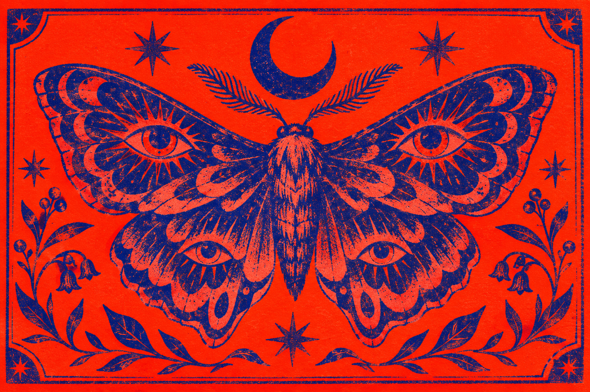

Independent illustration & small editions
Paper
Moth Press
Zines, prints, and portraits with ink that never quite stays inside the lines.
Browse the work ↓
Selected work
From the
print table.
Night Garden · Print
A moth among weeds and moonlight, drawn for a two color risograph print.
Things Found Walking · Zine
A pocket field guide to cracked sidewalks, volunteer plants, and other things worth looking down for.
Five Minute Faces · Portraits
Loose ink portraits imagined for a market table, each made in a single sitting.
Commissions
Bring an idea.
We’ll bring the ink.
Editorial illustration, small edition prints, and event portraits. A commission brief starts with the subject, intended use, format, and deadline.